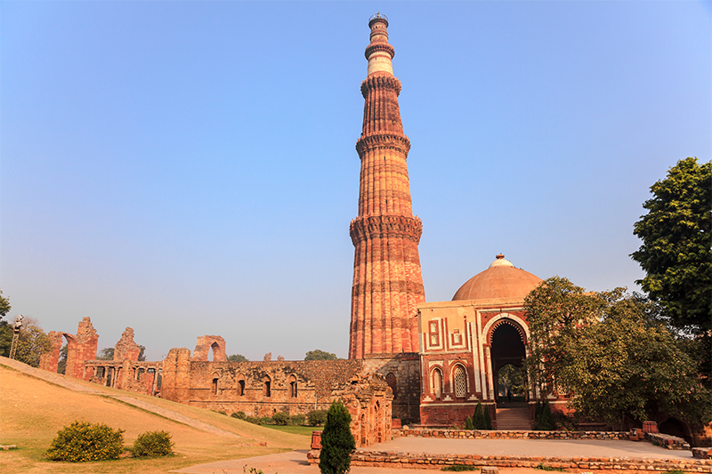

Rich in culture and diversity, India is home to some of the finest historical monuments in the world. Most recognised by the UNESCO World Heritage Site, the famous Indian monuments include the beautiful Taj Mahal, the sacred Golden Temple and the cultural site, Hawa Mahal. Discover and experience the magnificent insights into India’s rich heritage and ancient architecture. Read on for our list of the top must see historical monuments in India below. Taj Mahal, Agra Enlisted in the Seven Wonders of the World, The Taj Mahal is one of the most beautiful and famous buildings located in the city of Agra. This white marble monument was built by a Mughal Emperor called Shahajahan in memory of his beloved wife. Due to its amazing architecture and the history behind it, this world heritage site has become very popular to visit by all travellers and romantics from all over the world.

Golden Temple (Harmandir Sahib), Amritsar The holiest shrine and pilgrimage place located in Amritsar is The Golden Temple known as the Harmandir Sahib. This is the most famous and sacred Sikh Gurdwara in Punjab, India, adorned with rich history and gold gilded exterior. If you are interested in culture and history, be sure to visit this popular attraction in India.

Meenakshi Temple, Madurai Meenakshi Temple is situated on the Southern banks of Vaigai River in the temple city Madurai. This temple is dedicated to Parvati and her consort, Shiva and is visited by most Hindu and Tamil devotees and architectural lovers throughout the world. It is believed that this shrine houses 33,000 sculptures in its 14 gopurams. It’s no doubt one place to visit if you are impressed with art and cultural history.

Mysore Palace, Mysore The Mysore Palace is a famous historical monument in the city of Mysore in Karnataka. Commonly described as the City of Palaces, this is the most famous tourist attraction in India after the Taj Mahal. It is a sight not be missed with its spacious halls, lovely art paintings and Indo-Saracenic style architecture. Best time to visit is at night due to the astonishing illuminated lights covering the whole monument.

Gateway of India, Mumbai Even though Mumbai is famous for its Bollywood actors and movies, the most famous attraction in Mumbai is The Gateway of India. It is a popular gathering spot for locals, travellers, street vendors and photographers and is known as the Taj Mahal of Mumbai. The majestic monument was built to commemorate the visit of King George V and Queen Mary to Bombay. With so much fun and excitement this place is not to be missed with family or on your tour of India

Red Fort, New Delhi Declared as the UNESCO’s World Heritage Site, Red Fort is located in the centre of beautiful Delhi. If you love learning about history and culture then this famous historic monument is a must see place to visit. Built by the Mughal Emperor, Shah Jahan in 1648, and housing a number of museums, its walls are built of red sandstone. The best time to visit is on Independence Day where the Prime Minister of India hoists the national flag at the Red Fort. End the day by heading to an Indian restaurant and enjoy the varieties of wonderful cuisines

Hawa Mahal, Jaipur Explore a blend of beauty and Rajasthan culture, the Hawa Mahal also known as Palace of Winds is situated in the capital of Rajasthan, Jaipur. Built from red and pink sandstones by the Maharaja Sawi Pratap Singh in 1799, this unique five storey structure is one of the most prominent tourist attractions in the Jaipur city.

Qutub Minar, New Delhi Discover one of the tallest towers in the world and the second tallest Minar of India standing elegantly in the Capital city, New Delhi. Standing at 72.5 metres and consisting of around 379 stairs, this famous monument represents the rich architecture of India. As it is a UNESCO World Heritage Site made of red sandstone and decorated with Arabic and Brahmi inscriptions, travellers from around the world come to view this most famous tower in India.
